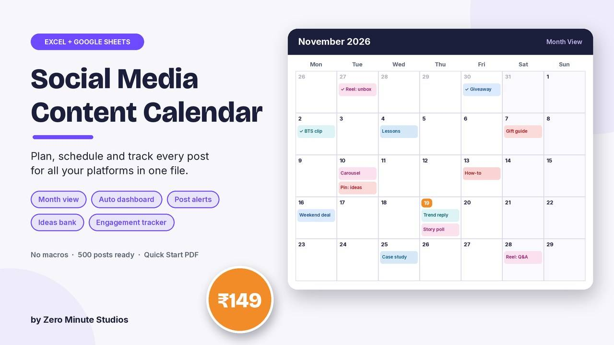
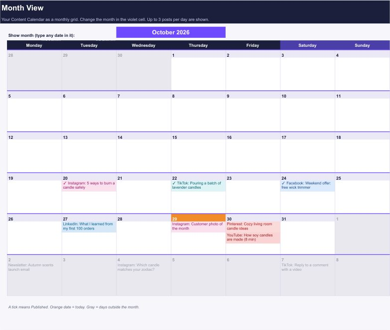
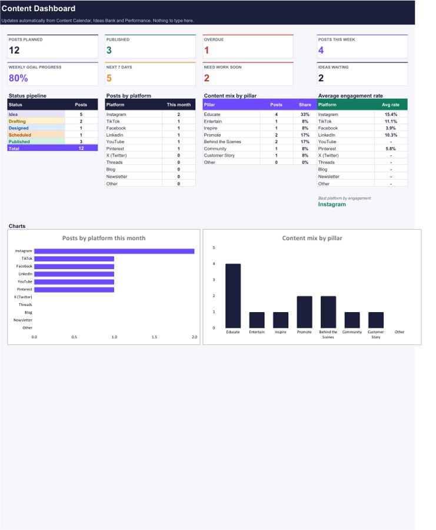

Social Media Content Calendar for Excel & Google Sheets

Stop posting when you remember. Plan every post for every platform in one file: what, where, when and who, with a month view, daily alerts and a dashboard that shows whether your content mix and posting goal are on track.
- Content Calendar: 500 post rows with platform, content pillar, format, topic, caption, hashtags, owner and status dropdowns
- Month View: your month as a calendar grid, up to 3 posts a day, coloured by platform, ticks on published posts
- Alerts: OVERDUE, POST TODAY, Coming up and Needs work, updated every day
- Dashboard: posts planned, published, overdue, this week vs your weekly goal, mix by platform and pillar, 2 charts
- Ideas Bank, Performance tracker (engagement rate, top 3 posts) and Hashtag Library
- Editable dropdown lists, sample rows to show how it works, no macros
Preview


FAQ
Does it work in Google Sheets? Yes. Upload the .xlsx to Google Drive and save it as a Google Sheet, or use Excel 2010 or newer.
Which platforms can I plan? Instagram, TikTok, Facebook, LinkedIn, YouTube, Pinterest, X, Threads, blog and newsletter. The list is editable.
How do I get it? Instantly after payment: an .xlsx file and a 2-page Quick Start PDF.
We don't do refund & return ✌️